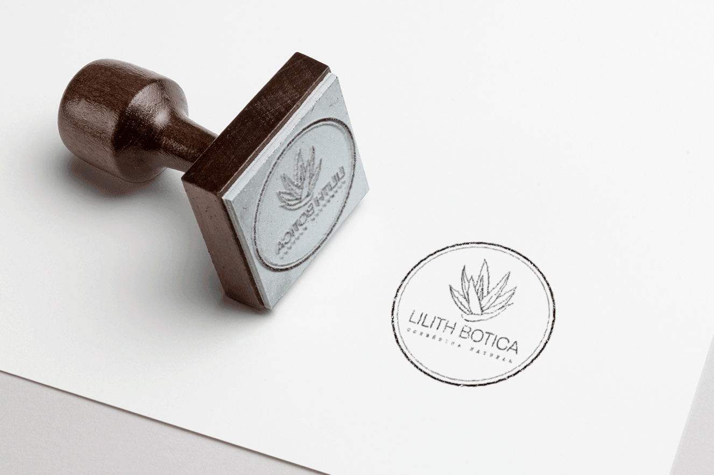
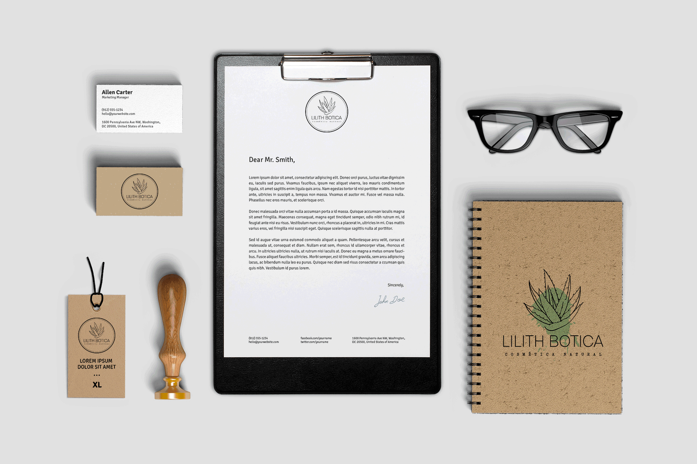
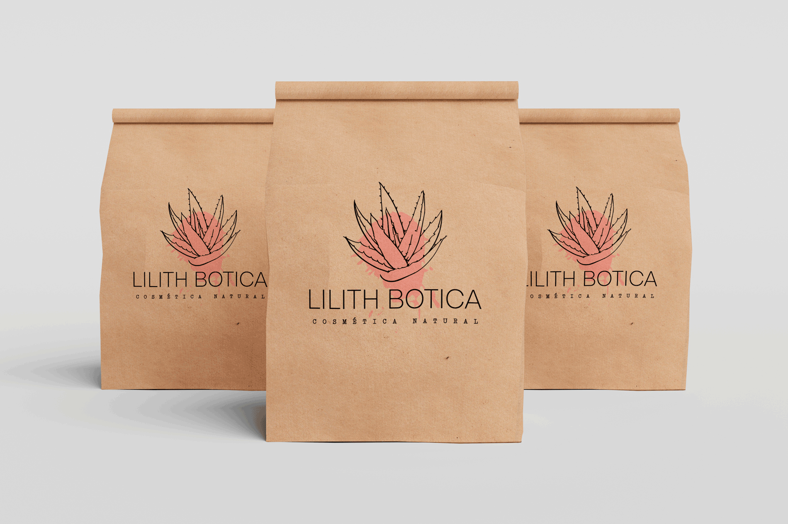
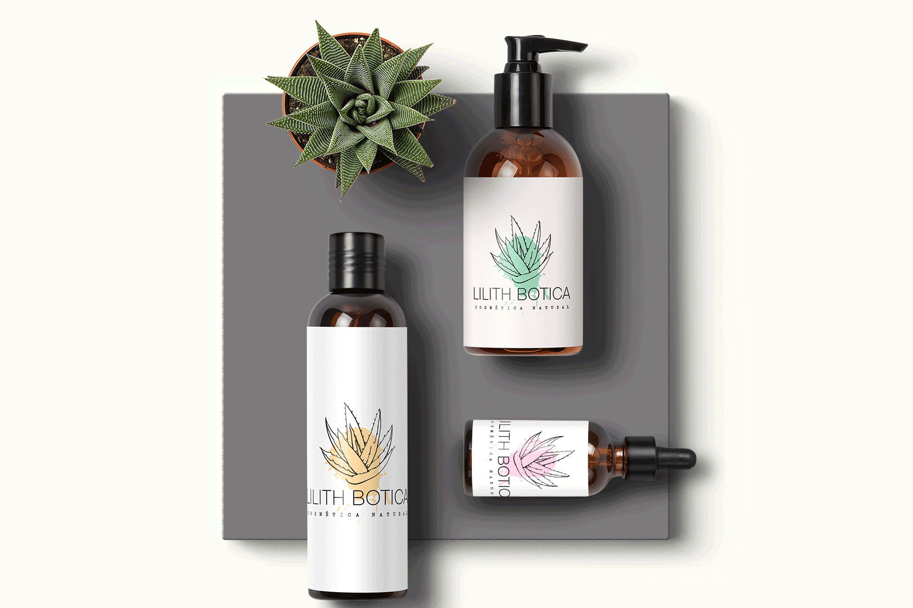

A Lilith Botica é uma marca de cosméticos naturais, completamente sustentável e artesanal idealizado por Vallerya Farias e Juliana Laet. A marca precisava de uma identidade nova, que fosse mais leve e dialogasse de forma mais natural com seu público. Além disso, as idealizadoras estava preocupadas com os danos a longo prazo que os materiais impressos que utilizavam e produziam geravam. Assim construímos uma nova marca, utilizando a forma visual da babosa, planta presente em quase todos os produtos, optando por linhas e traços mais finos a fim de evitar o uso excessivo de tintas na impressão de rótulos e uma aplicação em formato de carimbo, que poderá ser utilizada de variadas formas, incluindo tintas menos agressivas e orgânicas.



